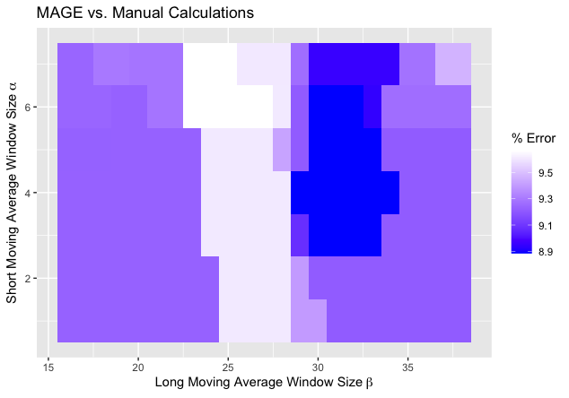
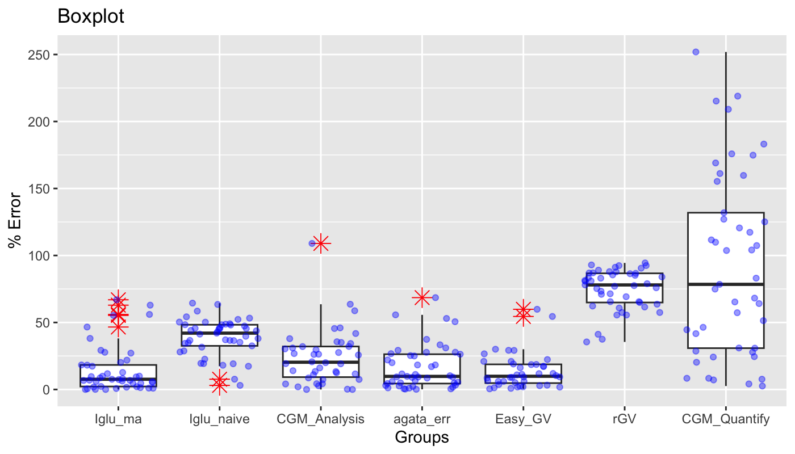
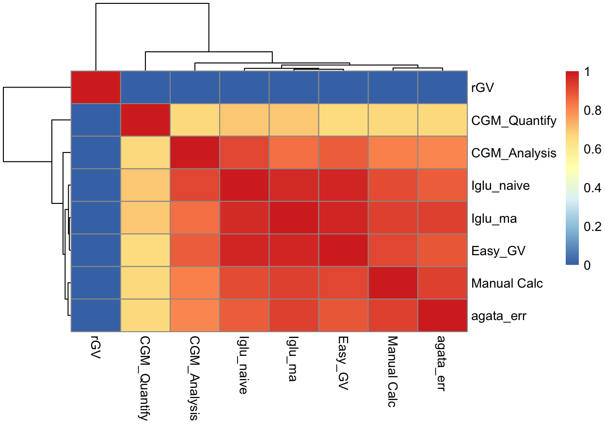
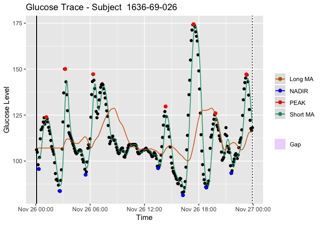
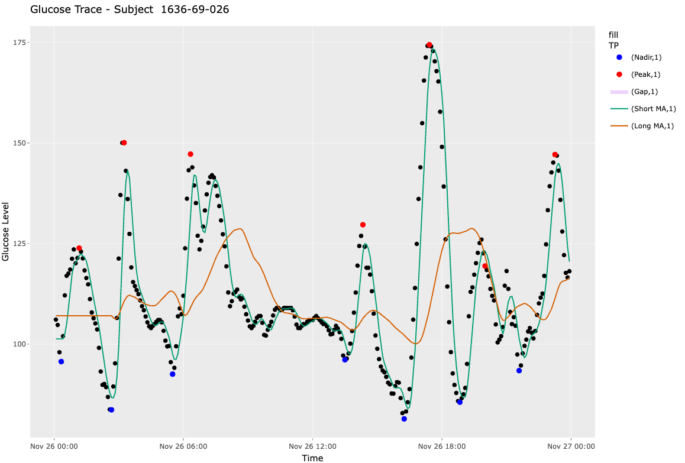

MAGE Algorithm
Nathaniel J. Fernandes, Nhan Nguyen, Elizabeth Chun, Naresh Punjabi, Irina Gaynanova
Source:vignettes/MAGE.Rmd
MAGE.RmdMean Amplitude of Glycemic Excursions (MAGE) is a glucose variability metric that can be applied to continuous glucose monitoring (CGM) data. From iglu version 3 onward, the package includes two algorithms for MAGE calculation:
iglu::mage(., version = 'ma')uses short and long moving averages to computationally emulate the original definition,iglu::mage(., version = 'naive')is a naive approximation solely included for backwards compatibility with earlier versions of iglu.
The moving average algorithm was published in the Journal of Diabetes Science and Technology: Open-source Algorithm to Calculate Mean Amplitude of Glycemic Excursions Using Short and Long Moving Averages, and the code to reproduce all tests can be found at the accompanying repository: Nathaniel-Fernandes/mage_algorithm_data. Below is a supplementary vignette describing the algorithm in more detail, our design choices, and the methods we used to test it. Some example code to get started using MAGE in iglu is included in the Implementation section.
Abstract
Background: Glucose variability is increasingly regarded as a risk factor for diabetes-related complications. The mean amplitude of glycemic excursions (MAGE) is a common measure of glucose variability. While its original definition requires manual calculations, there exist several software programs for automated calculations which have shown varying degrees of agreement. The objective of this study was to develop an automated algorithm for MAGE that would achieve high accuracy against the reference standard of manual calculations and benchmark it against existing alternatives.
Methods: Manual calculations of MAGE were performed on 45 publicly available CGM profiles from a diverse set of patients (i.e., Type 1 diabetes, Type 2 diabetes, and those without diabetes) following the definition described in Service et al. [3]. An automated algorithm for MAGE calculation was developed to identify peaks and nadirs of glycemic excursions based on the crosses of a short and long moving average of the glucose profile, and implemented in version 3+ of R package iglu. The accuracy of the algorithm was evaluated relative to manual calculations using a five-fold cross-validation and compared to other publicly available MAGE calculators, as listed in Table 2.
Results: The newly developed algorithm had the median error of 1.4% relative to manual calculations (iglu v4.1+). The median errors of the six other approaches including AGATA, EasyGV, cgmanalysis, naive iglu algorithm, rGV, and cgmquantify are 9.8%, 11.3%, 20.3%, 42.0%, 78.4%, and 78.1%, respectively.
Conclusions: The newly developed algorithm eliminates the need for tedious manual MAGE calculations and approximates the manual derivation better than existing approaches.
Introduction
Glucose variability is increasingly regarded as a risk factor for diabetes-related complications beyond HbA1c [1, 2]. The mean amplitude of glycemic excursions (MAGE) is a commonly used measure of glucose variability. As defined by Service et al. [3], MAGE is the arithmetic mean of the amplitude (i.e. height) of glucose excursions that are greater than the standard deviation of the glucose values. MAGE is calculated manually by visually inspecting the glucose profiles. However, this manual approach to calculating MAGE is error-prone and impractical for large data sets of continuous glucose monitors (CGMs). Thus, an automated algorithm for MAGE calculation that approximates the manual reference is needed.
Several software programs for automated MAGE calculations have been developed, and these implementations can be divided into two categories: those that only return the numeric MAGE values, and those that additionally provide a visual display of the calculations [4]. Examples in the first category include the Excel®-based workbook EasyGV [5], online GlyCulator2 [6], R package cgmanalysis [7], early versions of R package iglu [8], and Python package cgmquantify [9]. Because these software programs do not output a visual display of the performed calculations, the user has no means to inspect the calculations and confirm accuracy. Examples in the second category include programs developed by Fritzsche [10] and Baghurst [11]. However, we found the software developed by Fritzsche are not compatible with newer operating systems (e.g., Windows 10) to allow importing of CGM data. Additionally, Baghurst does not provide a downloadable implementation of his algorithm. However, according to documentation for cgmanalysis [7] and cgmquantify [9], these packages provide free implementations of Baghurst’s algorithm, albeit they may not fully reflect the original implementation.
The comparison of GlyCulator, EasyGV, Fritzsche, and Baghurst algorithms demonstrates varying degrees of agreement across MAGE algorithms [12]. While the aforementioned algorithms were compared to each other, they were not compared with the manual reference standard.
Thus, the objective of current study is to establish an approach of calculating MAGE that is user-friendly and approximates well the results obtained manually. Therefore, these goals are defined as follows.
To computationally emulate the manual method in Service et al. [3] with high accuracy based on the automated detection of peaks and nadirs tailored specifically towards CGM data
To provide a freely-available implementation with a visual display
To evaluate accuracy, the newly developed algorithm was compared with the manual derivations along with the other computational approaches.
Methods
CGM Data and Manual MAGE Calculation
Publicly-available CGM data were obtained from [13], from which 45 CGM traces were selected to represent a diverse set of patients (Type 1 diabetes, Type 2 diabetes, and those without diabetes), see Table 1. Each CGM trace corresponds to one day of measurements (24 h), where a day is defined from midnight to midnight as it is customary to calculate MAGE daily. Manual MAGE calculations were performed on each of the 45 CGM traces following the original description of MAGE calculations by Service et al. [3] by two of the authors, who were unaware of the outcome of the proposed algorithm’s outputs.
Table 1: Summary of the 45 CGM traces used for manual calculations. The first three datasets have been obtained as described in [13]. The last dataset is available within R package iglu [8].
| Dataset | Diabetes Type | Age group | Subject ID | Number of days used (CGM traces) |
|---|---|---|---|---|
| Hall et al. (2018) | None | Adults (>18) | 16 36-69-001 | 5 |
| 16 36-69-026 | 6 | |||
| Tsalikian et al. (2005) | Type 1 | Children (10 - 18) | 2 | 1 |
| 7 | 2 | |||
| 8 | 1 | |||
| 11 | 2 | |||
| 15 | 1 | |||
| 43 | 1 | |||
| 44 | 1 | |||
| Dubosson et al. (2005) | Type 1 | Adults (>18) | 1 | 5 |
| 2 | 2 | |||
| Broll et al. (2021) | Type 2 | Adults (>18) | Subject 1 | 1 |
| Subject 2 | 5 | |||
| Subject 3 | 1 | |||
| Subject 4 | 5 | |||
| Subject 5 | 6 |
Existing MAGE Calculators
We benchmarked the proposed algorithm against a variety of open and closed-source tools. To the best of our knowledge, the list in Table 2 comprises a relatively exhaustive list of existing packages to compute MAGE on CGM data as of May 15, 2024.
Table 2: An exhaustive list (to the best of our knowledge) of existing packages and algorithms to compute MAGE as of May 15, 2024. We also specify the version and release date if we benchmark the proposed MAGE algorithm against it, or the reason we were unable to.
| Tool or Algorithm Name | Has MAGE | Benchmarked? | Version Used | Release Date |
|---|---|---|---|---|
| iglu::mage_ma (Proposed) | Yes | Yes | iglu v4.1 | Present |
| iglu::mage_naive | Yes | Yes | iglu v2.0 | Feb 27, 2020 |
| EasyGV [5] | Yes | Yes |
EasyGV v9.0 (The download link for Version 10 is broken & only downloads Version 9.0) |
Oct 6, 2020 |
| cgmanalysis [7] | Yes | Yes | cgmanalysis v2.7.7 | Nov 20, 2023 |
| rGV [18] | Yes | Yes | rGV v0.0.4 | Jan 17, 2023 |
| cgmquantify [9] | Yes | Yes | Commit: d4a788c | Feb 8, 2021 |
| AGATA [19] | Yes | Yes | agata -2.1.1.zip | Jan 27, 2023 |
| CGDA [20] | Yes | No: skips computing MAGE for some CGM traces without warning | N/A | N/A |
| CGM Shiny [21] | Yes | No: Unable to load CSV files with sensor data | N/A | N/A |
| “Group of Signs” Method [22] | Yes | No: no open-source code provided. | N/A | N/A |
| “Spline Interpolation” Method [23] | Yes | No: no open-source code provided. Coded from scratch as per paper | N/A | N/A |
| “Linear Interpolation” Method [24] | Yes | No: no open-source code provided. Coded from scratch as per paper | N/A | N/A |
| GVAP Tool [25] | Yes | No: Requires CGM traces to have >100 points, which fails to work with some manual traces with large gaps | N/A | N/A |
| CGMTSA [26] | Yes | No: Cannot process some CGM traces when less than 24 hours worth of data | N/A | N/A |
| CGMStatsAnalyser [27] | Yes | No: Unable to load CSV files with sensor data | N/A | N/A |
| Fritzche [10] | Yes | No: Software not compatible with modern operating systems (Windows 10 / MacOS) | N/A | N/A |
|
GlyCulator2 [6] GlyCulator3 [28] |
Yes | No: program requires input of exact # of glucose values which fails to work with variable- length MAGE computation or CGM traces with gaps | N/A | N/A |
| MAGECAA v1.0 [4] | Yes | No: Closed -source - copy requested from the author | N/A | N/A |
| Baghurst [11] | Yes | No: Closed source. Unable to acquire a copy. | N/A | N/A |
| CGM-Guide [29] | Yes | No: Closed source. Unable to acquire a copy. | N/A | N/A |
| Tidepool [30] | No | N/A | N/A | N/A |
| GLU [31] | No | N/A | N/A | N/A |
| CGMAnalyzer [32] | No | N/A | N/A | N/A |
The Algorithm
The original MAGE description in Service et al. [3] requires (i) identification of turning points (e.g., peaks and nadirs) for calculation of glucose excursions; (ii) filtering those turning points to only keep relevant glucose excursions and calculating the mean of those excursion amplitudes (i.e., heights).
To the best of our knowledge, our implementations for both parts (i) and (ii) are unique.
-
Identification of peaks and nadirs. The proposed algorithm uses the crosses of a short and long moving average to identify time intervals where a peak or nadir may exist. Let be the window size for the short moving average and 𝛽 be the window size for the long moving average, such that . Since the shorter moving average is more affected by local variation in the glucose values than the longer moving average, a peak or nadir (i.e., a turning point, ) must exist on the intervals that are bounded by the crosses of the two moving averages and as demonstrated in Figure 1, with the exception of “whiplash”. (Note: the first and last glucose values are always treated as crossing points [Appendix: Why are the first and last data points always treated as crossing points?].) To solve the issue of “whiplash”, where the true peak/nadir falls outside the interval bounded by and for back-to-back sinusoidal excursions [Appendix: What is whiplash?], we make the assumption that peaks and nadirs alternate (peak, nadir, peak, nadir, etc.) or vice versa and calculate subsequent peaks or nadirs sequentially as the maximum or minimum glucose value, respectively, between the index of (left boundary, exclusive) and (right boundary, inclusive) for . The left boundary is for the base case of .
A distinct advantage of using moving averages to identify the turning points is that they inherently smooth out local fluctuations and noise within larger trends in a glucose profile. The amount of smoothing can be tuned by varying window size parameters and . By default, the algorithm uses and as these values maximized the algorithm’s accuracy on the manual MAGE calculations, where and .
-
Eliminating Excursions and Calculation of Mean Amplitudes. An excursion is defined by three turning points , where the amplitude of the excursion is calculated as follows: and . An “acceptable” excursion, as defined by Service et al. [3], requires the amplitudes of both the left-side and right-side half-excursions to exceed the standard deviation of the entire CGM trace. Computationally, we devised the procedure below to calculate acceptable excursions, given a set of alternating turning points. To prevent double counting excursions, only ascending (MAGE+) or descending (MAGE–) half-excursion amplitudes are averaged (i.e., or , respectively), where ascending means is a peak and vice versa. When excursions are symmetric, MAGE+ = MAGE–, however in general they may disagree [11]. By default, our implementation follows the description in Service et al. [3], and returns MAGE+ or MAGE– depending on which type of excursion first crosses the one SD threshold; however, the user can specify either if desired.
Procedure: Starting from (note: R is 1-based), check whether the amplitude exceeds the one standard deviation threshold, . If false, the algorithm will calculate and so on until a large enough amplitude is found or the CGM trace ends. Note: we use the maximum to enable “accumulation”, an optimization that allows an earlier larger half-excursion to absorb a later smaller half-excursion. Once an acceptable left-side half-excursion is found, the boundaries and are recorded and the same procedure is used to find an acceptable right-side excursion, where is updated if . We record once or the CGM trace ends.
Handling Gaps
The algorithm outlined above assumes that the input CGM trace should be treated contiguously, with MAGE calculated over the entire trace and turning points alternate (peak, nadir, peak, nadir, etc.) or vice versa. However, this can lead to suboptimal results if large gaps are present in the trace. While small gaps can be interpolated before MAGE calculation (starting in iglu v3.3.0), CGM values separated by large gaps should be treated as separate segments, with MAGE calculated on each segment independently. By default, MAGE released in iglu v3.5.1+ segments the CGM trace by gaps larger than and calculates MAGE via the above algorithm on each segment [Appendix: [Why set a default of 180 minutes for max_gap?]]. The user can then return the MAGE values for each segment () or a one-number summary for the variability of the entire CGM trace (). MAGE for the entire trace is reported as an average of the segment MAGE values, weighted by segment length (, where is the length of segment and ). The plot displays segments with a solid, black vertical line for the left-boundary and a dashed, black vertical line for the right boundary.
Implementation
The newly developed algorithm for MAGE calculation can be found from
version 3 onward in R package iglu [17] as well as the accompanying GUI
via Shiny App [8] - both are free and open-source. Implementation in a
script-based programming language like R allows the creation of
reproducible scripts for all data processing and MAGE calculation steps,
and the availability of a point-and-click GUI meets the needs of
researchers with limited programming experience. By default, the
algorithm uses
and
,
however these choices can be adjusted by the user.
# load package and example data
library(iglu)
# mage calculation using default parameters
mage(example_data_5_subject)
#> # A tibble: 5 × 2
#> # Rowwise:
#> id MAGE
#> <fct> <dbl>
#> 1 Subject 1 72.4
#> 2 Subject 2 118.
#> 3 Subject 3 116.
#> 4 Subject 4 70.9
#> 5 Subject 5 142.
# Adjust default window sizes in mage calculation
mage(example_data_5_subject, short_ma = 3, long_ma = 30)
#> # A tibble: 5 × 2
#> # Rowwise:
#> id MAGE
#> <fct> <dbl>
#> 1 Subject 1 72.3
#> 2 Subject 2 118.
#> 3 Subject 3 116.
#> 4 Subject 4 70.9
#> 5 Subject 5 142.In addition to providing a numerical MAGE value, the software allows the creation of glucose trace plots that highlight the selected peaks and nadirs used for MAGE calculation.
# subset data to better see identified peaks and nadirs
fig1data <- example_data_1_subject[1:200, ]
# plot using mage function with plot = TRUE and show_ma = TRUE
mage(fig1data, plot = TRUE, show_ma = TRUE, title = "Glucose Trace - Subject 1")
Figure 1: Glucose trace of Subject 2 with Type 2 diabetes from Broll et al. [8], the solid green line is a short MA with = 5 and the solid orange line is a long MA with = 32. The peaks and nadirs occur between the crosses of short and long moving averages. By default, the algorithm calculates MAGE+ as in this profile the first segment to exceed one SD threshold is ascending. The provided graphical display in iglu software [17] automatically highlights only those peaks (red) and nadirs (blue) that are used for final calculation.
Additionally, the plot will highlight any gaps in the data due to missing readings. If these gaps are shorter than , they will be part of the same segment.
# subset data to better show gaps
fig2data <- example_data_1_subject[200:400, ]
# plot using mage function with plot = TRUE
mage(fig2data, plot = TRUE, title = "Glucose Trace with Gaps - Subject 1")
Figure 2. Glucose trace of Subject 5 with Type 2 diabetes from Broll et al. [8] with regions of missing glucose readings automatically highlighted using iglu software [17].
Assessment of Accuracy
The accuracy of the proposed algorithm was evaluated against 45 manual
calculations. For each CGM trace, the accuracy was measured as the
relative percent difference in the automatically calculated MAGE value
and the manual MAGE value, that is:
.
To find optimal combination of window sizes, we considered and , and recorded the mean errors across 45 CGM traces for each pair of () values. The optimal () pair was determined as the one that leads to the minimal in-sample error. Since the obtained minimal error is a biased assessment of accuracy as the optimal () were selected based on the same 45 traces, five-fold cross-validation was also performed to gain an unbiased assessment of accuracy. The 45 CGM traces were randomly split into five groups of nine samples each. The best () combination was then chosen using four out of the five groups, and used to evaluate the accuracy on the remaining group. The best combination was defined as the one that gave the lowest percent error compared to manual calculations. This out-of-sample evaluation was performed on all five groups.
The accuracy of EasyGV [5], cgmanalysis [7], cgmquantify [9], rGV, AGATA, and the MAGE algorithm implemented in the earlier version of iglu [8] was also determined against the manual reference derivation. The latter is a naive simplification of original MAGE definition, as it calculates MAGE as the mean of absolute differences between glucose values and the glucose mean that are larger than one standard deviations (and thus does not attempt to explicitly identify peaks and nadirs). We use iglu_ma to denote the proposed algorithm based on moving averages, and iglu_naive to denote the naive algorithm used in earlier versions of the software. We were unable to evaluate GlyCulator2 [6] because the software requires CGM trace to have at least 576 time points, and thus returns NA when applied to 24-hour CGM data. We were also unable to evaluate Fritzsche [10] as importing the CGM data into the provided user interface on Windows 10 lead to errors.
Assessment of Parameter Frequency Robustness
We also test if the optimal long and short window parameters chosen
on the 5-minute CGM data - i.e.,
()
- are robust to the frequency of the meter / CGM data (e.g., 1-, 5-,
10-, and 15-minute). To do this, we use the
iglu::CGMS2DayByDay function to change the raw data’s
frequency to 1-, 10-, and 15-minute intervals, and automatically imputes
glucose values for gaps less than 45 minutes. We then rerun the
hyperparameter tuning code to discover the best
()
selected on the new data and report the mean, median, and IQR of errors.
Note that this is not a perfect comparison: information is lost when
downsampling the 5-minute CGM trace to 10- and 15-minutes but the manual
calculations compared against are performed on 5-minute data. Thus, we
expect to see a slightly degraded performance on the 10- and 15-minute
data simply due to this design limitation and not necessarily an
algorithm limitation.
Results
The optimal choice of window sizes () for the proposed algorithm on the 5-minute CGM data was determined to be (5, 32) as this combination minimized the average error relative to 45 manual calculations. Figure 3 shows a heatmap of the percent average error (across 45 traces) as a function of and , where the darkest regions represent the most favorable combinations of and . (Note: while there was a tie, we chose hyperparameters in the middle of the dark region.) The minimum corresponds to a mean average error of 8.9% with a much smaller median percent error of 1.4% and [Q1, Q3] = [0.5%, 7.1%]. As expected, the unbiased out-of-sample cross-validated errors are slightly larger, but still relatively low: 9.1% mean with the median of 10.0% and inter-quartile range of [9.4%, 11.8%].

Figure 3. Heatmap of average errors over 45 CGM traces of automatically calculated MAGE values via proposed algorithm relative to manual MAGE values. The short moving average window size and the long moving average window size . The darker regions correspond to smaller errors, with the minimal error of % achieved at , .
Compared to the other available automated algorithms, the next best results were achieved by EasyGV, which had an average error of 23.4%, the median error of 11.3% and the IQR of [6.0%, 22.3%]. In constrast, cgmanalysis, iglu_naive, and cgmquantify all had significantly higher errors, with median errors (and interquartile range) of 20.3% [8.6%, 32.1%], 42.0% [32.6%, 48.3%], and 78.4% [30.8%, 131.9%], respectively. Figure 4 shows boxplots of relative errors of all algorithms on 45 CGM traces. Figure 5 and Table 3 show a correlation matrix of all algorithms on the 45 CGM traces. (Note: see the “Important Notes on rGV” in the Discussion below.)

Table 3. Correlation matrix of various MAGE calculators’ outputs on the 45 CGM traces.
| Manual Calc | Iglu_ma | Iglu_naive | CGM_Analysis | Easy_GV | agata_err | rGV | CGM_Quantify | |
|---|---|---|---|---|---|---|---|---|
| Manual Calc | 1.00 | 0.93 | 0.90 | 0.82 | 0.91 | 0.92 | 0 | 0.66 |
| Iglu_ma | 0.93 | 1.00 | 0.96 | 0.85 | 0.98 | 0.92 | 0 | 0.70 |
| Iglu_naive | 0.90 | 0.96 | 1.00 | 0.92 | 0.98 | 0.88 | 0 | 0.69 |
| CGM_Analysis | 0.82 | 0.85 | 0.92 | 1.00 | 0.87 | 0.80 | 0 | 0.66 |
| Easy_GV | 0.91 | 0.98 | 0.98 | 0.87 | 1.00 | 0.89 | 0 | 0.66 |
| agata_err | 0.92 | 0.92 | 0.88 | 0.80 | 0.89 | 1.00 | 0 | 0.66 |
| rGV | 0.00 | 0.00 | 0.00 | 0.00 | 0.00 | 0.00 | 1 | 0.00 |
| CGM_Quantify | 0.66 | 0.70 | 0.69 | 0.66 | 0.66 | 0.66 | 0 | 1.00 |
Figure 4. Comparison of relative errors of different automatic algorithms for MAGE calculation relative to manual MAGE values on 45 CGM traces. The proposed method is implemented as ma (moving average) algorithm in R package iglu [17]; best corresponds to the errors with , ; cv corresponds to the out-of-sample errors based on 5- fold-cross-validation for .

Figure 5. Heatmap of correlation matrix of various MAGE calculators’ outputs on the 45 CGM traces.
Table 4. Correlation matrix of various MAGE calculators’ outputs on the 45 CGM traces and the mean and standard deviations of the 45 CGM traces.
| mean | sd | |
|---|---|---|
| Manual Calc | 0.68 | 0.88 |
| Iglu_ma | 0.70 | 0.93 |
| Iglu_naive | 0.67 | 0.98 |
| CGM_Analysis | 0.61 | 0.94 |
| Easy_GV | 0.66 | 0.95 |
| agata_err | 0.72 | 0.86 |
| rGV | 0.00 | 0.00 |
| CGM_Quantify | 0.90 | 0.64 |
| mean | 1.00 | 0.66 |
| sd | 0.66 | 1.00 |
For the proposed algorithm, both in-sample errors with the best choice of window sizes () and out-of-sample cross-validated errors are displayed. The corresponding numerical summaries are summarized in Table 2.
Table 5: Numerical summaries of relative errors of automatic MAGE calculators on 45 CGM traces compared to manual calculations. The proposed method is implemented as ma (moving average) algorithm in R package iglu [17]; best corresponds to the errors with = 5, = 32; cv corresponds to the out-of-sample errors based on 5-fold-cross-validation for , .
| Algorithm | Mean | Median | IQR |
|---|---|---|---|
| iglu (ma, best) | 8.9% | 1.4% | [0.5%, 7.1%] |
| iglu (ma, cv) | 9.1% | 10.0% | [9.4%, 11.8%] |
| iglu (naive) | 39.0% | 42.0% | [32.6%, 48.3%] |
| EasyGV | 23.4% | 11.3% | [6.0%, 22.3%] |
| cgmanalysis | 23.9% | 20.3% | [8.6%, 32.1%] |
| cgmquantify | 91.9% | 78.4% | [30.8%, 131.9%] |
| rGV | 74.7% | 78.1% | [64.9%, 86.7%] |
| AGATA | 16.7% | 9.8% | [4.4%, 26.3%] |
Table 6: Numerical summaries of relative errors of the proposed MAGE algorithm on 45 CGM traces compared to manual calculations at varying frequencies of the underlying data. The relatively constant mean error rate demonstrates the proposed method and selected hyperparameters ( = 5, = 32) are robust to the frequency of the meter.
| CGM Frequency | Mean | Median | IQR |
|---|---|---|---|
| 1-min | 6.5% | 0.6% | [0.3%, 3.6%] |
| 5-min | 8.9% | 1.4% | [0.5%, 7.1%] |
| 10-min | 9.7% | 2.5% | [1.2%, 8.4%] |
| 15-min | 10.7% | 5.3% | [2.1%, 9.0%] |
Discussion
There are several software programs for automatic MAGE calculation, however, they show varying agreement [12]. In the current study, a new automated algorithm for MAGE was developed based on moving averages which demonstrated the least amount of error relative to manual reference when compared to other automated algorithms.
The newly developed algorithm approximated the manual results better than EasyGV, cgmanalysis, iglu_naive, and cgmquantify. The largest discrepancy was noted for cgmanalysis and cgmquantify both of which implemented Baghurst’s algorithm [11]. It is unclear whether the deviation from manual reference is due to the underlying algorithm or the specific of implementations of the algorithm. The differences in accuracy among the MAGE algorithms points to the necessity of a visual display of the underlying calculations with identified peaks and nadirs. While such visual display is implemented for the proposed MAGE algorithm in version 3 of R package iglu [17], this functionality is absent from EasyGV, cgmanalysis, and cgmquantify, making it more difficult for the user to verify the accuracy.
The correlation between our proposed algorithm (with Service definition) and manual calculations per Service is 0.93 when compared across the same 45 CGM traces. This is the largest correlation value across the implementations we have compared (0.92 for AGATA, 0.91 for EasyGV, 0.90 for older iglu MAGE algorithm, 0.82 for CGManalysis and 0.66 for CGMQuantify), which is consistent with our proposed approach showing the lowest error rate relative to manual calculations. When comparing correlations between our approach and existing methods, we find correlation of 0.98 with EasyGV, 0.96 with older iglu MAGE algorithm, 0.92 with AGATA, 0.85 with CGManalysis and 0.7 with CGMquantify.
As can be seen in Table 4, there is a relatively high correlation between MAGE and standard deviation of the CGM trace. This has been noted before [33] and has led some to question the importance of using MAGE over the simpler standard deviation. Nevertheless, further research is needed to see if MAGE is better correlated with clinical outcomes (e.g., morbidity or mortality) than the simple standard deviation.
A major challenge for any automated MAGE algorithm is separation of true peaks and nadirs in a larger trend from the smaller glucose fluctuations. A particular advantage of the proposed algorithm is the use of moving averages which inherently smooth out local fluctuations within a larger trend. The amount of smoothing can be tuned by varying the window sizes of the short and long moving averages, and we found that the algorithm is quite robust to the choice of window sizes, with high accuracy in a large range (Figure 3). Additionally, the proposed optimal short and long moving averages are robust to the frequency of the CGM meter, as shown by the similar mean errors of the MAGE algorithm despite the meter frequency in Table 4. One disadvantage is that the moving average is a lagging indicator, and thus is undefined in the beginning of the time period (e.g., a moving average of window size 20 is undefined for the first 19 time points). This could skew the calculations of MAGE if the first times points contain a lot of variation in subject’s glucose levels. To adjust for this, the algorithm replaces the undefined moving average values at the first time points with the first calculated moving average value (e.g., a moving average of window size 20 will be first calculated at 20th time point, and that same value will be assigned to the first 19 time point to be later used in determining the crosses of short and long moving averages). This adjustment can be seen for the long moving average in Figure 1, where its value is flat for the first 32 points. Given the high accuracy of the proposed algorithm compared to manual calculations, this adjustment is adequate, however it is possible that it may not be adequate for some CGM profiles. In practice, we recommend to inspect the visual display of MAGE calculations provided by iglu [17] as in Figures 1 and 2 for additional accuracy validation. Another challenge for MAGE calculations is the presence of asymmetric excursions. To prevent double counting, typically only ascending (MAGE+) or descending (MAGE–) excursion amplitudes are averaged. When excursions are symmetric, MAGE+ = MAGE–, and the accuracy is not affected irrespective of the choice of direction. However, when excursions are asymmetric, the direction matters as the two disagree. By default, our algorithm follows the description in Service et al. [3], and calculates MAGE+ or MAGE– depending on which type of excursion first crosses the one SD threshold. The same decision is made in [12]. However, Baghurst [11] argues that it is more appropriate to use . Our implementation allows the user to change the default settings, and explicitly calculate MAGE+, MAGE–, MAGEavg, or MAGEmax, which makes our algorithm’s implementation more flexible compared to existing MAGE software.
Important Notes on rGV and cgmquantify
As seen in Figure 4 and Table 3 above, the errors for rGV and cgmquantify are quite high and much different than the other calculators. After further analysis, we believe the following reasons explain the high errors.
- The MAGE function in rGV outputs 20 regardless of the input data - this behavior is reproducible even with the example given in the rGV function.
- cgmquantify may incorrectly index a dataframe during the mage computation, as identified in https://github.com/brinnaebent/cgmquantify/issues/10.
Conclusion
We present a new algorithm for MAGE calculation that significantly outperforms existing algorithms. The implementation of this algorithm is free and open-source, it is available in the R package iglu version 3 [17] as well as in the accompanying GUI via Shiny App at https://irinagain.shinyapps.io/shiny_iglu/. Furthermore, the visual displays of the CGM traces, exact values for manual MAGE and the code to reproduce all analyses, along with instructions on how to download each CGM trace, are publicly available at https://github.com/Nathaniel-Fernandes/mage_algorithm_data. The public nature of CGM traces, manual MAGE values, and the algorithm allow additional validation of presented results by a community at large.
Funding Sources: NSF CAREER Award DMS-2044823 to IG
Acknowledgements: The source of subset of the data is the T1D Exchange, but the analyses, content and conclusions presented herein are solely the responsibility of the authors and have not been reviewed or approved by the T1D Exchange.
Disclosures: None
Appendix
Why are the first and last data points always treated as crossing points?
If we didn’t, we would throw away at the beginning or end of CGM trace because the MAGE algorithm calculates MAGE between the first and last crossing point. For example, assume a CGM trace of 100 values with the first and last crossing point at index 20 and 80, respectively. The turning points are looked for between index 20 and 80, which throws out the beginning and end. Thus, we automatically record the first and last points in the CGM trace as crossing points.
What is whiplash?
We coined the term whiplash to describe two back-to-back excursions that roughly form a sinusoid. These sinusoidal excursions pose a problem for identifying the true peaks and nadirs defining an excursion since the moving average is a lagging indicator. In other words, at the end of one period of a sinusoidal excursion, the long moving average will be approximately equal to the short moving average (i.e., ). Since the moving average is a lagging indicator, by the time a cross between the short and long moving average occurs, the true peak or nadir indicating the start of an excursion may have already occurred. Thus, starting in MAGE iglu v3.5.1, we calculate turning points sequentially between and as compared to and , previously. See the difference in the identified in the images below, the first being MAGE iglu v3.5.1 (whiplash corrected) and the second MAGE iglu v3.5.0 (whiplash not corrected).

Figure 5. Plot of Subject 1636-69-026 via MAGE iglu v3.5.1 with correction for whiplash. Notice the true peak is properly identified for .

Figure 6. Plot of Subject 1636-69-026 via MAGE iglu v3.5.0 without whiplash corrected for. Notice the true peak is not properly identified for .
Why set a default of 180 minutes for max_gap?
The purpose of max_gap is to split the CGM trace into
different logical segments - i.e., there are so many missing values
between segments 1 and 2 that it makes more sense to treat them as
separate than as one continuous trace. For example, say a patient wears
their CGM on Monday and Wednesday but forgets on Tuesday. There would be
a stretch of 24-h of missing data! Thus, it makes more sense to
calculate MAGE on Monday and Wednesday independently, as we cannot
extrapolate what occurred in the time in-between.
While it is fairly obvious in the above example that we should
segment the CGM trace, what about shorter stretches of missing data?
Since the purpose of MAGE is to calculate the mean amplitude of glycemic
excursions, the ideal max_gap will split the trace
when there is a possibility of missing an excursion. Since post-prandial
excursions typically last a maximum of 180 minutes [citation needed], we
chose 180 minutes as an acceptable default threshold. To explain in
natural language: if we have >180 minutes of missing data, we likely
have missed either an entire excursion or multiple excursions, so we
treat the trace as two distinct segments.
References
[1] Kovatchev BP. Metrics for glycemic control—from HbA1c to continuous glucose monitoring. Nature Reviews Endocrinology. 2017 Jul;13(7):425-36.
[2] Service FJ. Glucose variability. Diabetes. 2013 May;62(5):1398-404.
[3] Service FJ, Molnar GD, Rosevear JW, Ackerman E, Gatewood LC, Taylor WF. Mean amplitude of glycemic excursions, a measure of diabetic instability. Diabetes. 1970 Sep 1;19(9):644-55.
[4] Yu X, Lin L, Shen J, Chen Z, Jian J, Li B, Xin SX. Calculating the mean amplitude of glycemic excursions from continuous glucose data using an open-code programmable algorithm based on the integer nonlinear method. Computational and mathematical methods in medicine. 2018 Mar 8;2018.
[5] Hill NR, Oliver NS, Choudhary P, Levy JC, Hindmarsh P, Matthews DR. Normal reference range for mean tissue glucose and glycemic variability derived from continuous glucose monitoring for subjects without diabetes in different ethnic groups. Diabetes technology & therapeutics. 2011 Sep 1;13(9):921-8.
[6] Pagacz K, Stawiski K, Szadkowska A, Mlynarski W, Fendler W. GlyCulator2: an update on a web application for calculation of glycemic variability indices. Acta diabetologica. 2018 Aug;55(8):877-80.
[7] Vigers T, Chan CL, Snell-Bergeon J, Bjornstad P, Zeitler PS, Forlenza G, Pyle L. cgmanalysis: an R package for descriptive analysis of continuous glucose monitor data. Plos one. 2019 Oct 11;14(10):e0216851.
[8] Broll S, Urbanek J, Buchanan D, Chun E, Muschelli J, Punjabi NM, Gaynanova I. Interpreting blood GLUcose data with R package iglu. Plos one. 2021 Apr 1;16(4):e0248560.
[9] Bent B. cgmquantify: python package for analyzing glucose and glucose variability. Python package version 0.5. 2020 Nov 11. https://github.com/brinnaebent/cgmquantify Date Accessed: March 11, 2021.
[10] Fritzsche G, Kohnert KD, Heinke P, Vogt L, Salzsieder E. The use of a computer program to calculate the mean amplitude of glycemic excursions. Diabetes technology & therapeutics. 2011 Mar 1;13(3):319-25
[11] Baghurst PA. Calculating the mean amplitude of glycemic excursion from continuous glucose monitoring data: an automated algorithm. Diabetes technology & therapeutics. 2011 Mar 1;13(3):296-302.
[12] Sechterberger MK, Luijf YM, DeVries JH. Poor agreement of computerized calculators for mean amplitude of glycemic excursions. Diabetes technology & therapeutics. 2014 Feb 1;16(2):72-5.
[13] Martin M, Chun E, Buchanan D, Bhat R, Cass S, Wang E, Senthil S, Gaynanova I. irinagain/Awesome-CGM: List of public CGM datasets (Version v1.1.0). 2021, April 27. https://github.com/irinagain/Awesome-CGM Date Accessed: May 1, 2021.
[14] Hall H, Perelman D, Breschi A, Limcaoco P, Kellogg R, McLaughlin T, Snyder M. Glucotypes reveal new patterns of glucose dysregulation. PLoS biology. 2018 Jul 24;16(7):e2005143.
[15] Tsalikian E, Mauras N, Beck RW, Tamborlane WV, Janz KF, Chase HP, Wysocki T, Weinzimer SA, Buckingham BA, Kollman C, Xing D. Impact of exercise on overnight glycemic control in children with type 1 diabetes mellitus. The Journal of pediatrics. 2005 Oct;147(4):528-34.
[16] Dubosson F, Ranvier JE, Bromuri S, Calbimonte JP, Ruiz J, Schumacher M. The open D1NAMO dataset: A multi-modal dataset for research on non-invasive type 1 diabetes management. Informatics in Medicine Unlocked. 2018 Jan 1;13:92-100.
[17] Broll S, Buchanan D, Chun E, Muschelli J, Fernandes N, Seo J, Shih J, Urbanek J, Schwenck J, Gaynanova I. iglu: Interpreting Glucose Data from Continuous Glucose Monitors. R package version 3.0.0. 2021 July 23. https://cran.r-project.org/package=iglu. Date Accessed: July 23, 2021.
[18] Olawsky, Evan, et al. “A new analysis tool for continuous glucose monitor data.” Journal of diabetes science and technology 16.6 (2022): 1496-1504.
[19] Cappon, Giacomo, Giovanni Sparacino, and Andrea Facchinetti. “AGATA: a toolbox for automated glucose data analysis.” Journal of Diabetes Science and Technology (2023): 19322968221147570.
[20] Attaye, Ilias, et al. “Introducing the Continuous Glucose Data Analysis (CGDA) R Package: an intuitive package to analyze continuous glucose monitoring data.” Journal of diabetes science and technology 16.3 (2022): 783-785.
[21] rolandhangelbroek. “CGM Shiny”. GitHub: https://github.com/rolandhangelbroek/cgmshiny.
[22] Zaccardi, Francesco, et al. “Group of signs: a new method to evaluate glycemic variability.” Journal of diabetes science and technology 2.6 (2008): 1061-1065.
[23] Syafa’ah, Lailis, Mauridhi Hery Purnomo, and Setio Basuki. “Discrete mean amplitude of glycemic excursion (MAGE) measurement on diabetics with spline interpolation method.” International Journal on Electrical Engineering and Informatics 10.2 (2018): 259-270.
[24] Hendaryati, Heni, Askandar Tjokroprawir, and Lailis Syafa’ah. “Measurement of MAGE (Mean Amplitude of Glycemic Excursion) at Diabetics with Interpolation Method.” Research Report (2017): 79-87.
[25] Marics, Gábor, et al. “Evaluation of an open access software for calculating glucose variability parameters of a continuous glucose monitoring system applied at pediatric intensive care unit.” Biomedical engineering online 14 (2015): 1-13.
[26] Shao, Jian, Tao Xu, and Kaixin Zhou. “CGMTSA: An R package for continuous glucose monitoring time series data analysis.” bioRxiv (2020).
[27] Piersanti, Agnese, et al. “Software packages and tools for the analysis of continuous glucose monitoring data.” Diabetes Technology & Therapeutics 25.1 (2023): 69-85.
[28] Chrzanowski, Jędrzej, et al. “Glyculator 3.0: A fast, easy-to-use Analytical tool for CGM data analysis, aggregation, center Benchmarking, and data sharing.” Diabetes Care 46.1 (2023): e3.
[29] Rawlings, Renata A., et al. “Translating Glucose Variability Metrics into the Clinic via C ontinuous G lucose M onitoring: AG raphical U ser I nterface for D iabetes E valuation (CGM-GUIDE©).” Diabetes technology & therapeutics 13.12 (2011): 1241-1248.
[30] “Tidepool,” www.tidepool.org. https://www.tidepool.org/.
[31] Millard, Louise AC, et al. “GLU: a software package for analysing continuously measured glucose levels in epidemiology.” International Journal of Epidemiology 49.3 (2020): 744-757.
[32] Zhang, Xiaohua Douglas, Zhaozhi Zhang, and Dandan Wang. “CGManalyzer: an R package for analyzing continuous glucose monitoring studies.” Bioinformatics 34.9 (2018): 1609-1611.
[33] Rodbard, David. “New and improved methods to characterize glycemic variability using continuous glucose monitoring.” Diabetes technology & therapeutics 11.9 (2009): 551-565.